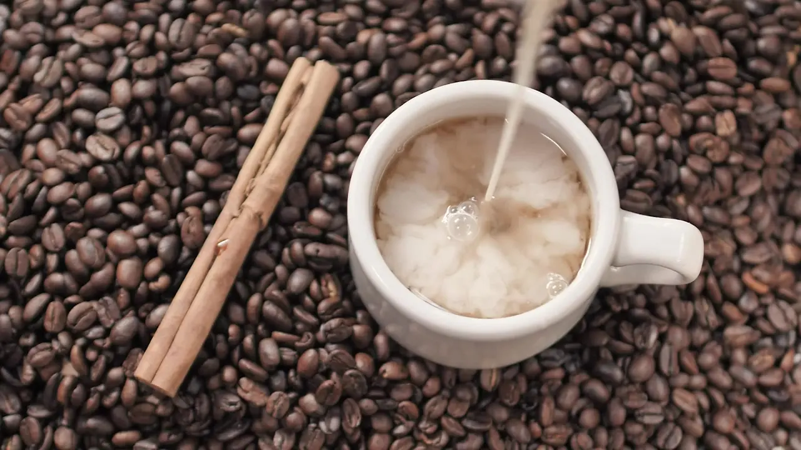
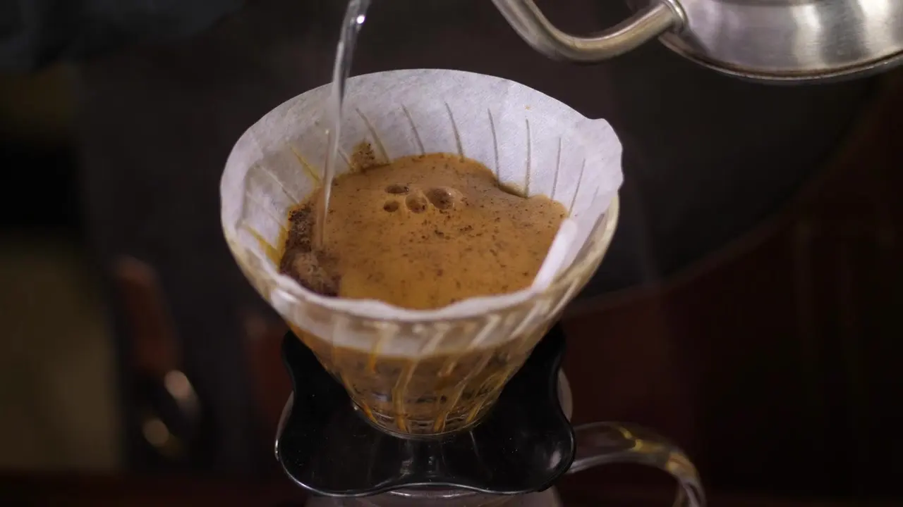
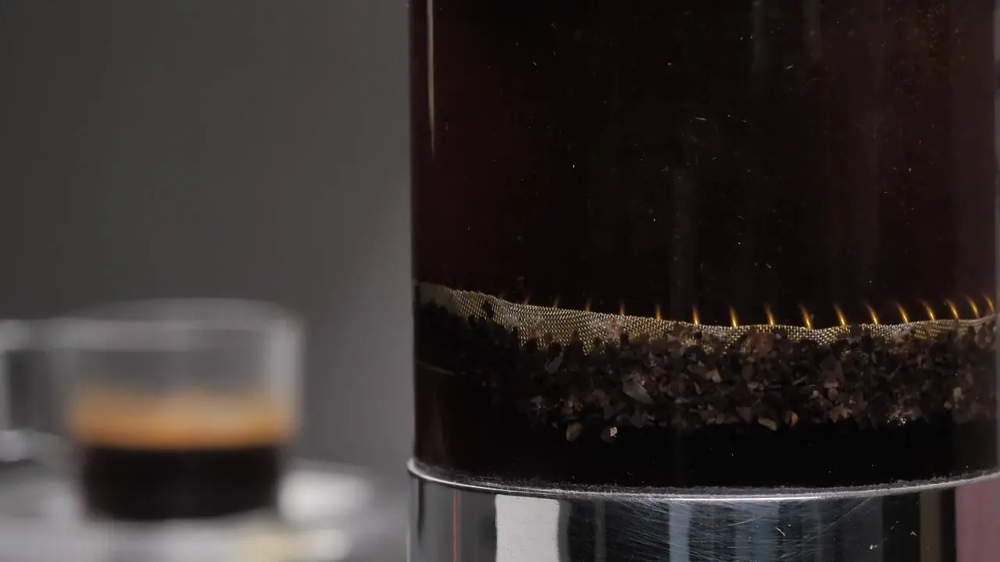
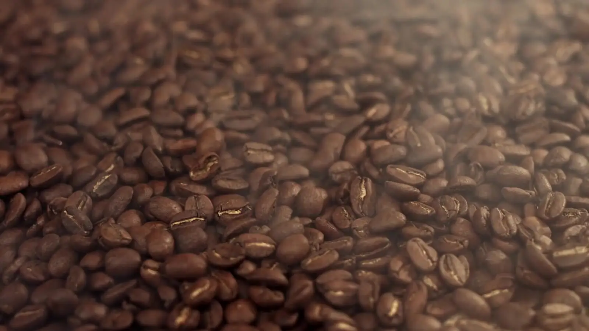

Cómo prepararlo
Recetas para sacarle el mejor sabor a tu café, desde el cafecito cubano de toda la vida hasta el cold brew.

Cafecito cubano
El de toda la vida: fuerte, dulce y con su espumita.
Llena el depósito de la cafetera con agua fría hasta la válvula.
Pon El Mío en el embudo hasta el borde, sin apretarlo, y enrosca bien.
Fuego medio. Ten lista una taza con el azúcar: una cucharadita por cada tacita que vas a servir.
Cuando salgan las primeras gotas, échalas sobre el azúcar y regresa la cafetera al fuego.
Bate el azúcar con esas gotas hasta formar una crema clara y espesa: la espumita.
Cuando termine de subir el café, viértelo sobre la espumita, revuelve suave y sirve en tacitas.
Consejo: Retira la cafetera del fuego apenas empiece a gorgotear. Si sigue hirviendo, el café se amarga.

Cortadito
Mitad cafecito, mitad leche caliente. El de media mañana.
Prepara un cafecito cubano con su espumita.
Calienta la leche hasta que esté bien caliente, sin que hierva. Si quieres, espúmala.
Sirve el café en un vaso pequeño y complétalo con la misma cantidad de leche.
Consejo: Con leche evaporada queda más cremoso y dulce, como en muchas cafeterías de Miami.

Café con leche
El desayuno cubano: una taza grande, bien caliente.
Cuela el café en la cafetera, esta vez sin espumita.
Calienta bien la leche y endulza a tu gusto.
Sirve la leche en una taza grande y agrega el café por encima.
Consejo: El clásico va con una tostada de pan cubano con mantequilla para mojar en la taza.
Espresso en máquina
Para quien tiene máquina en casa o en el negocio.
Llena el portafiltro con 18 g de café molido para espresso.
Nivela y prensa con firmeza y de forma pareja.
Extrae unos 36 g de bebida en 25 a 30 segundos.
Consejo: Si muele en casa: cuando sale muy rápido y ácido, muele más fino; si sale lento y amargo, más grueso.

Cafetera de goteo
Para la jarra de la mañana y para los cafés de origen.
Pon el filtro y agrega 2 cucharadas rasas de café por cada taza de agua.
Llena el depósito con agua fría y enciende la cafetera.
Cuando termine, revuelve la jarra antes de servir para que el sabor quede parejo.
Consejo: Colombia y Costa Rica lucen sus notas de fruta y miel en goteo.

Prensa francesa
Cuerpo y aroma con muy pocos pasos.
Pon 30 g de café molido grueso por cada 450 ml de agua.
Agrega agua recién hervida que haya reposado 30 segundos y revuelve.
Tapa sin bajar el émbolo y espera 4 minutos.
Baja el émbolo despacio y sirve enseguida.
Consejo: Si lo dejas en la prensa, se sigue extrayendo y se amarga: sírvelo todo de una vez.

Cold brew
Para los días de calor en Miami, que son casi todos.
Mezcla 100 g de café molido grueso con 800 ml de agua fría en un frasco.
Tapa y deja reposar en la nevera entre 12 y 18 horas.
Cuela con un filtro de papel o de tela.
Sirve con hielo. Si queda muy concentrado, rebaja con agua o leche.
Consejo: Se conserva hasta una semana en la nevera, bien tapado.
Elige tu molido
El molido correcto depende de cómo prepares el café.
Espresso (fino)
Para cafetera italiana y máquina de espresso. Es el molido del cafecito cubano.
Medio
Para cafetera de goteo, filtro de papel o colador de tela.
Grueso
Para prensa francesa y cold brew.
En grano
Si tienes molino en casa: muele justo antes de colar.